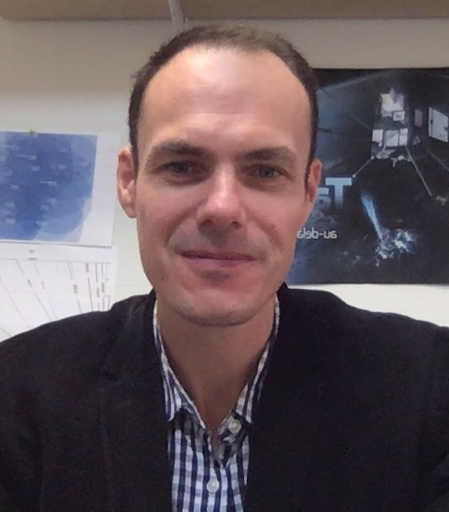

Sébastien Célestin, Ph.D.
Professor of Physics — University of Orléans, France
Laboratory of Physics and Chemistry of the Environment and Space (LPC2E)
Member of the Institut Universitaire de France (IUF), 2021–2026
Research interests
My research centers on the acceleration of particles in the atmosphere, and in thunderstorms in particular, where it gives rise to relativistic runaway electron avalanches (RREAs) and related nonlinear feedback effects.
I am also interested in transient luminous events (halos, sprites, blue and gigantic jets) and in non-thermal plasma physics, such as streamer discharges, which underlie many of these processes.
These problems span a very broad range of energy, at the crossover between non-equilibrium plasma physics and high-energy physics. To tackle them, I am involved in both instrumental and theoretical efforts — from balloon-borne gamma-ray instrumentation to the modeling of runaway electron avalanches and thermal runaway processes.
Instrumentation & major projects
Recent publications
View full publication list (60 articles) →- Celestin, S., M. B. Garnung, T. Farges, B. Kosar, L. Boggs, and P. M. Smith, 2026, Green Emissions From Sprite Tops, J. Geophys. Res., 131, e2026JA035144. DOI
- Hazem, Y., S. Celestin, F. Trompier, and Y. Hobara, 2026, Detecting Thunderstorm-Related High-Energy Phenomena in Weak Signals, J. Geophys. Res., 131, e2025JD045152. DOI
- Pasko, V. P., S. Celestin, and A. Bourdon, 2026, Relativistic Feedback Discharges in Dielectric Solids, Phys. Rev. Lett., 136, 095301. DOI
- Pasko, V. P., S. Celestin, A. Bourdon, R. Janalizadeh, Z. Pervez, J. Jánský, and P. Gourbin, 2025, Photoelectric effect in air explains lightning initiation and terrestrial gamma ray flashes, J. Geophys. Res., 130, e2025JD043897. DOI
- Pallu, M., S. Celestin, and P. Laurent, 2025, Numerical simulations for optimizing small satellite constellations for TGF studies, J. Geophys. Res., 130, e2024JD042528. DOI
Awards & professional service
- 2026–present: LPC2E Space Plasmas Team Coordinator
- 2024–present: Executive Board member, Department of Physics, University of Orléans
- 2022–2023: Member of the AGU Canvassing Committee for the focus group Atmospheric and Space Electricity (ASE)
- 2021: Member of the AGU Fellows Committee for the focus group ASE
- 2019–2023: Chair of the URSI French National Committee, Commission G
- 2016–2019: Vice-chair of the URSI French National Committee, Commission G
- 2016–2024: Member of the CNES working group Sun–Heliosphere–Magnetosphere (SHM)
- 2014–2019: Member of the Scientific Council of the Sun-Earth National Program (PNST), France
- 2014–2024: Member of the Executive Council of LPC2E, University of Orléans, CNRS
- Since 2014 (Senior Member, 2020): International Union of Radio Science (URSI)
- Since 2009: Member, American Geophysical Union